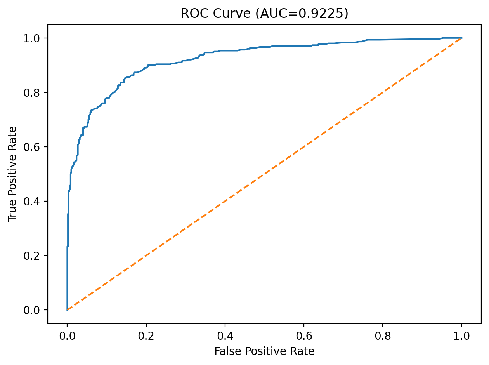
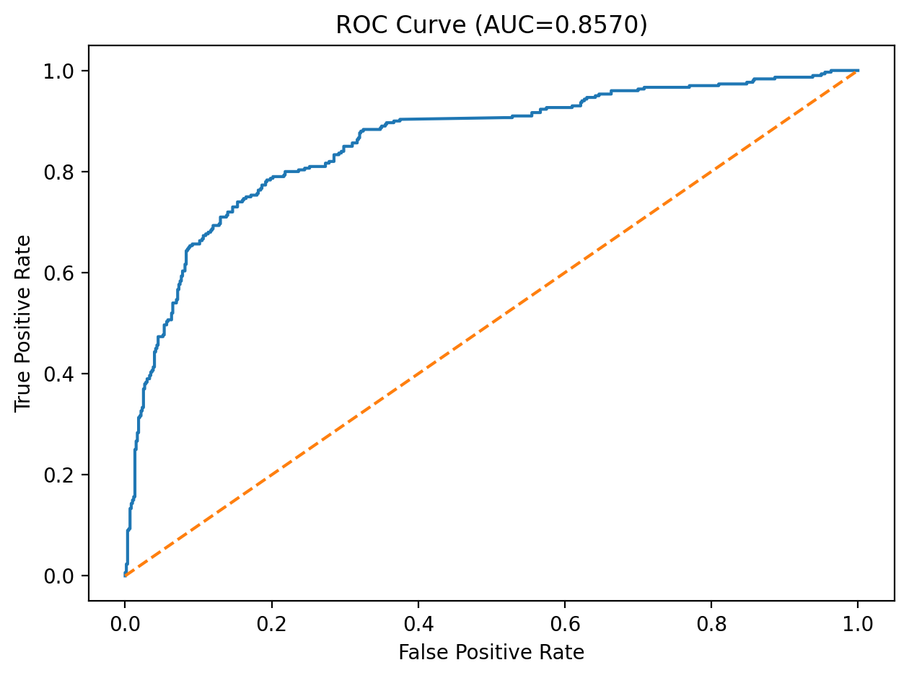
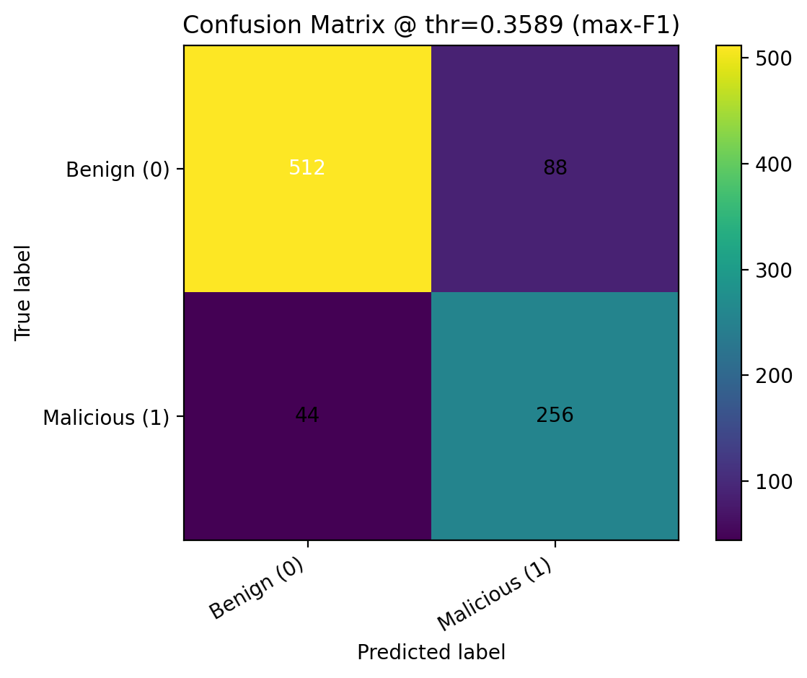
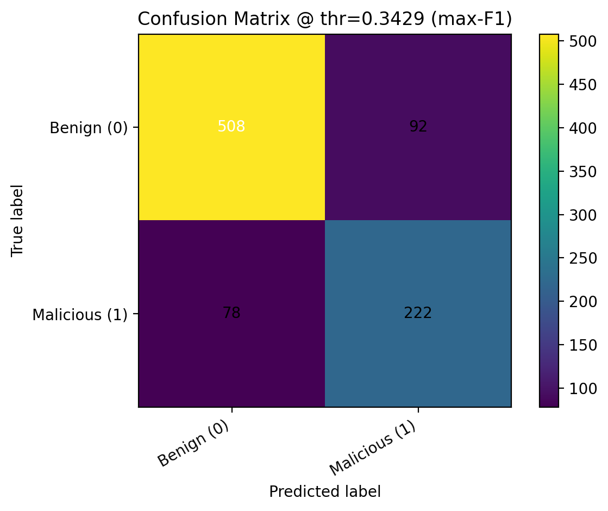

FIE
Security Scanner
Scanner
Security Scanner
Learn how our project classifies Chrome extensions as benign or malicious using engineered static features, feature selection, and supervised learning. Find summaries of our evaluation results and visual explanations (feature importance + SHAP) down below.
To construct our dataset, we compiled a collection of known malicious and benign Chrome extension IDs. Extension IDs were gathered in large batches using a third-party extension tool, Chrome-Stats.
Each labeled extension was scanned using our feature extraction pipeline to produce a structured feature vector. We split the dataset into train/test before training to reduce leakage risk and ensure fair evaluation.
Our pipeline extracts static indicators from extension files and metadata. The goal is to capture behaviors commonly associated with malicious extensions — such as dynamic code execution, suspicious DOM manipulation, and risky external connections — using measurable, engineered features.
Models were implemented in scikit-learn (Python). We used standard evaluation utilities and
saved trained artifacts (e.g., via joblib). We also generated
explanation plots (e.g., SHAP) to visualize global feature influence.
We used Random Forest as the main feature-ranking stage in our machine learning pipeline. Rather than using all extracted features directly, we first used Random Forest to estimate which features contributed most strongly to malicious-versus-benign classification, then passed the top-ranked subset into our final SVM-RBF model.
To choose the number of trees, we trained forests from 15 to 500 estimators and measured out-of-bag error for each one. OOB error is computed from bootstrap samples and gives an internal estimate of how well the forest generalizes without requiring a separate validation split. We selected the forest size that minimized OOB error before running feature selection.
Selected forest size: 275 trees
With the tree count fixed, we ran 5-fold stratified cross-validation over feature subset sizes. For each fold, we trained a Random Forest on the training split, ranked the features by feature importance, selected the top k features, retrained the model using only those features, and evaluated performance on the validation split.
We repeated this process for every subset size from 1 to n and chose the value of k with the lowest average Mean Absolute Error (MAE) across folds. In our binary setting, this acts as an average prediction error measure over benign/malicious labels.
Selection metric: 5-fold CV MAE : 0.128
After identifying the optimal subset size, we retrained Random Forest on the training data, produced a final descending ranking of all features, and saved that ordering for later use. This ranked list became the basis for the feature subset used in our final calibrated SVM-RBF classifier.
We used a Support Vector Machine with an RBF kernel as our final classifier for malicious extension detection. The model was trained on a reduced input space of 39 Random-Forest-ranked features, allowing us to focus on the most informative static and behavioral indicators extracted from extension code.
The training pipeline consisted of StandardScaler followed by SVC(kernel="rbf"). Feature scaling was necessary because SVMs are sensitive to magnitude differences across input variables, and the RBF kernel was chosen to capture non-linear relationships that a linear separator would miss.
Model selection was performed with GridSearchCV over C, gamma, and class_weight using 5-fold stratified cross-validation. We optimized for average precision rather than raw accuracy so the chosen model would better handle class imbalance and prioritize malicious-class retrieval quality.
After training, we applied sigmoid probability calibration with CalibratedClassifierCV and evaluated threshold-free metrics such as ROC-AUC and PR-AUC, along with thresholded metrics including precision, recall, F1, balanced accuracy, and MCC. We compared predictions at the default threshold of 0.5, the max-F1 threshold, and a Youden’s J threshold, then saved the calibrated model, selected feature list, best hyperparameters, and final operating threshold into the deployment bundle.
Final feature subset: 39 features
Below we report our final test-set performance. These values come from the evaluation artifacts generated in our training pipeline.
In a malware detection setting, recall often matters because false negatives are costly. However, we also monitor precision to limit false positives. Threshold selection can shift this tradeoff.
These plots help explain model behavior and performance.




